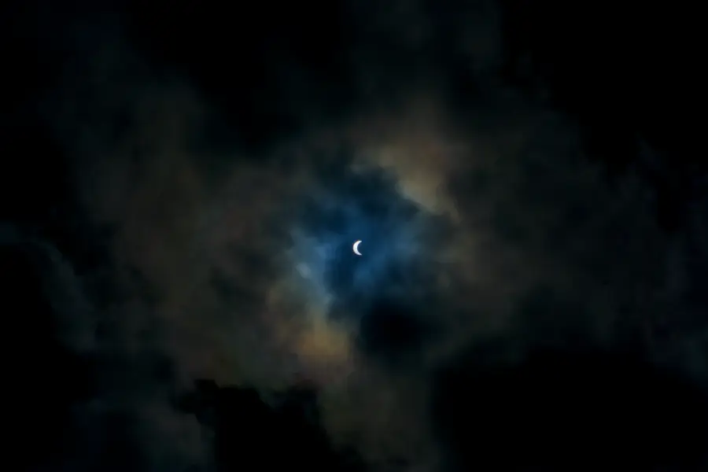

Quartet Tour
Nine cities with aBeethoven cycle.
Violinist · Portfolio
Chamber music, film sessions, and a 300-year-old fiddle that humbles me daily.
Selected work
Nine cities with aBeethoven cycle.
Led violin section on two scores.
A house-concert series, twelve living rooms.
Violin and guitar, recorded in one chapel.
A strings program started from four students.
The complete sonatas and partitas, memorized.

About
Chamber music, film sessions, and a 300-year-old fiddle that humbles me daily.
Everything on this page is made to be scrolled slowly. The work below is the honest list — outcomes attached, fluff removed.
Currently
Focus — Chamber music
Also — Orchestral excerpts
Based — Toronto
Services
Chamber music, film sessions, and a 300-year-old fiddle that humbles me daily. Chamber music is where this shows up most — ask for examples on a call.
Chamber music, film sessions, and a 300-year-old fiddle that humbles me daily. Orchestral excerpts is where this shows up most — ask for examples on a call.
Chamber music, film sessions, and a 300-year-old fiddle that humbles me daily. Film session playing is where this shows up most — ask for examples on a call.
Chamber music, film sessions, and a 300-year-old fiddle that humbles me daily. Baroque bowing is where this shows up most — ask for examples on a call.
Chamber music, film sessions, and a 300-year-old fiddle that humbles me daily. Teaching is where this shows up most — ask for examples on a call.
Chamber music, film sessions, and a 300-year-old fiddle that humbles me daily. Ensemble leading is where this shows up most — ask for examples on a call.
Contact
guest@violinist-light:~$ contact --init → name : Paloma Ortiz → role : Violinist → email : hello@violinist-light.io → response-time : within 24 hours guest@violinist-light:~$ _
“Chamber music, film sessions, and a 300-year-old fiddle that humbles me daily.”